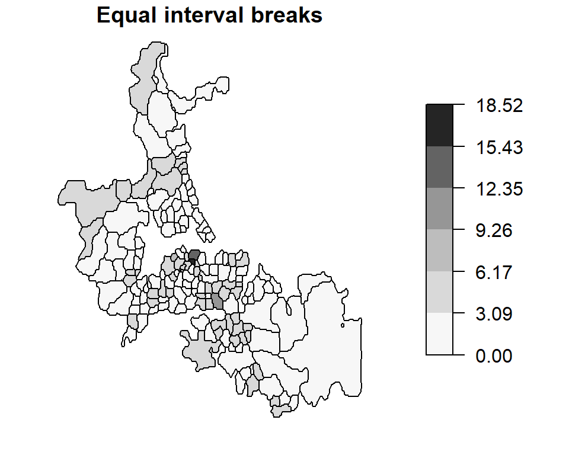
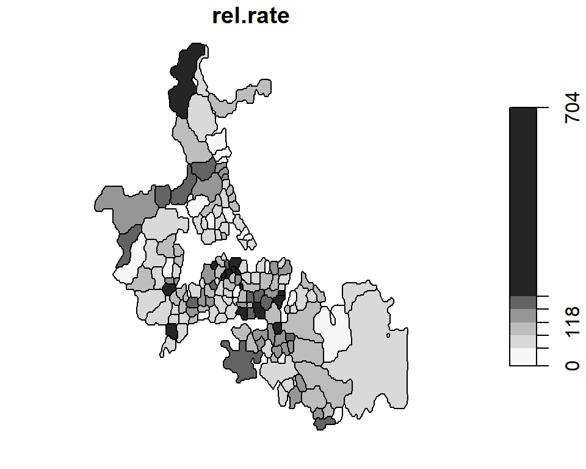
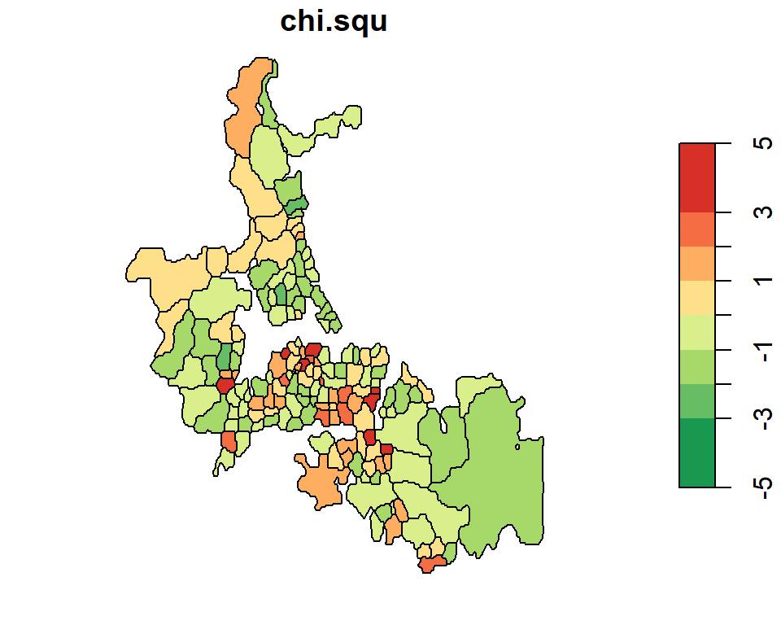
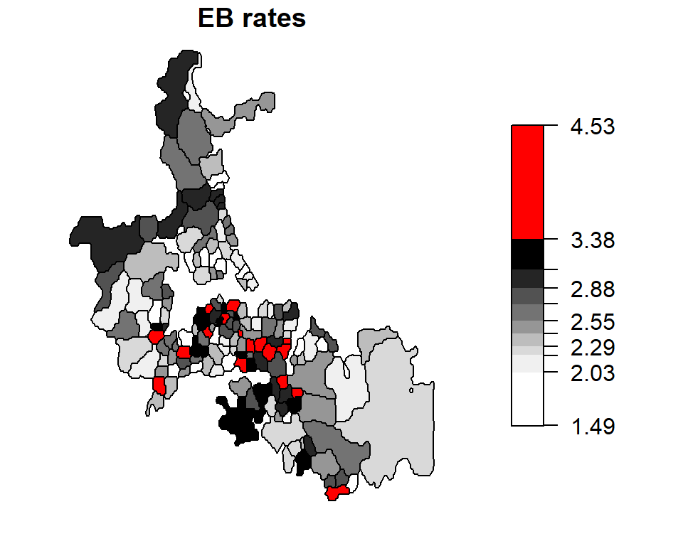

E Mapping rates in R
| R | spdep | classInt | RColorBrewer | sf | sp |
| 4.3.1 | 1.2.8 | 0.4.10 | 1.1.3 | 1.0.14 | 2.0.0 |
In this exercise, we’ll make use of sf’s plot method instead of tmap to take advantage of sf’s scaled keys which will prove insightful when exploring rate mapping techniques that adopt none uniform classification schemes.
The following libraries are used in the examples that follow.
Next, we’ll initialize some color palettes.
pal1 <- brewer.pal(6,"Greys")
pal2 <- brewer.pal(8,"RdYlGn")
pal3 <- c(brewer.pal(9,"Greys"), "#FF0000")The Auckland dataset from the spdep package will be used throughout this exercise. Some of the graphics that follow are R reproductions of Bailey and Gatrell’s book, Interactive Spatial Data Analysis (Bailey and Gatrell 1995).
Reading layer `auckland' from data source
`C:\Users\mgimond\AppData\Local\R\win-library\4.3\spData\shapes\auckland.shp'
using driver `ESRI Shapefile'
Simple feature collection with 167 features and 4 fields
Geometry type: POLYGON
Dimension: XY
Bounding box: xmin: 7.6 ymin: -4.3 xmax: 91.5 ymax: 99.3
CRS: NAThe Auckland data represents total infant deaths (under the age of five) for Auckland, New Zealand, spanning the years 1977 through 1985 for different census area units. The following block of code maps these counts by area. Both equal interval and quantile classification schemes of the same data are mapped.
brks1 <- classIntervals(auckland$M77_85, n = 6, style = "equal")
brks2 <- classIntervals(auckland$M77_85, n = 6, style = "quantile")
plot(auckland["M77_85"], breaks = brks1$brks, pal = pal1, at = round(brks1$brks,2),
main = "Equal interval breaks", key.pos = 4, las = 1)
plot(auckland["M77_85"], breaks = brks2$brks, pal = pal1, at = brks2$brks,
main = "Quantile breaks", key.pos = 4, las = 1)

These are examples of choropleth maps (choro = area and pleth = value) where some attribute (an enumeration of child deaths in this working example) is aggregated over a defined area (e.g. census area units) and displayed using two different classification schemes.
Since the area units used to map death counts are not uniform in shape and area across Auckland, there is a tendency to assign more “visual weight” to polygons having larger areas than those having smaller areas. In our example, census units in the southern end of Auckland appear to have an “abnormally” large infant death count. Another perceptual interpretation of the map is one that flags those southern units as being “problematic” or of “great concern”. However, as we shall see in the following sections, this perception may not reflect reality. We therefore seek to produce perceptually tenable maps. Dykes and Unwin (Dykes and Unwin 2001) define a similar concept called map stability which seeks to produce maps that convey real effects.
Raw Rates
A popular approach for correcting for biased visual weights (due, for instance, to different unit area sizes) is to normalize the count data by area thus giving a count per unit area. Though this may make sense for population count data, it does not make a whole lot sense when applied to mortality counts; we are usually interested in the number of deaths per population count and not in the number of deaths per unit area.
In the next chunk of code we extract population count under the age of 5 from the Auckland data set and assign this value to the variable pop. Likewise, we extract the under 5 mortality count and assign this value to the variable mor. Bear in mind that the mortality count spans a 9 year period. Since mortality rates are usually presented in rates per year, we need to multiply the population value (which is for the year 1981) by nine. This will be important in the subsequent code when we compute mortality rates.
Next, we will compute the raw rates (infant deaths per 1000 individuals per year) and map this rate by census unit area. Both quantile and equal interval classification schemes of the same data are mapped.
auckland$raw.rate <- mor / pop * 1000
brks1 <- classIntervals(auckland$raw.rate, n = 6, style = "equal")
brks2 <- classIntervals(auckland$raw.rate, n = 6, style = "quantile")
plot(auckland["raw.rate"], breaks = brks1$brks, pal = pal1, at = round(brks1$brks,2),
main = "Equal interval breaks", key.pos = 4, las = 1)
plot(auckland["raw.rate"], breaks = brks2$brks, pal = pal1, at = round(brks2$brks,2),
main = "Quantile breaks", key.pos = 4, las = 1)
Note how our perception of the distribution of infant deaths changes when looking at mapped raw rates vs. counts. A north-south trend in perceived “abnormal” infant deaths is no longer apparent in this map.
Standardized mortality ratios (relative risk)
Another way to re-express the data is to map the Standardized Mortality Ratios (SMR)-a very popular form of representation in the field of epidemiology. Such maps map the ratios of the number of deaths to an expected death count. There are many ways to define an expected death count, many of which can be externally specified. In the following example, the expected death count \(E_i\) is estimated by multiplying the under 5 population count for each area by the overall death rate for Auckland: \[E_i = {n_i}\times{mortality_{Auckland} } \] where \(n_i\) is the population count within census unit area \(i\) and \(mortality_{Auckland}\) is the overall death rate computed from \(mortality_{Auckland} = \sum_{i=1}^j O_i / \sum_{i=1}^j n_i\) where \(O_i\) is the observed death count for census unit \(i\).
This chunk of code replicates Bailey and Gatrell’s figure 8.1 with the one exception that the color scheme is reversed (Bailey and Gatrell assign lighter hues to higher numbers).
auck.rate <- sum(mor) / sum(pop)
mor.exp <- pop * auck.rate # Expected count over a nine year period
auckland$rel.rate <- 100 * mor / mor.exp
brks <- classIntervals(auckland$rel.rate, n = 6, style = "fixed",
fixedBreaks = c(0,47, 83, 118, 154, 190, 704))
plot(auckland["rel.rate"], breaks = brks$brks, at = brks$brks, pal = pal1,
key.pos = 4, las = 1)
Dykes and Unwin’s chi-square statistic
Dykes and Unwin (Dykes and Unwin 2001) propose a similar technique whereby the rates are standardized following:
\[\frac{O_i - E_i}{\sqrt{E_i}} \]
This has the effect of creating a distribution of values closer to normal (as opposed to a Poisson distribution of rates and counts encountered thus far). We can therefore apply a diverging color scheme where green hues represent less than expected rates and red hues represent greater than expected rates.
auckland$chi.squ = (mor - mor.exp) / sqrt(mor.exp)
brks <- classIntervals(auckland$chi.squ, n = 6, style = "fixed",
fixedBreaks = c(-5,-3, -1, -2, 0, 1, 2, 3, 5))
plot(auckland["chi.squ"], breaks = brks$brks, at = brks$brks, pal=rev(pal2),
key.pos = 4, las = 1)
Unstable ratios
One problem with the various techniques used thus far is their sensitivity (hence instability) to small underlying population counts (i.e. unstable ratios). This next chunk of code maps the under 5 population count by census area unit.
brks <- classIntervals(auckland$Und5_81, n = 6, style = "equal")
plot(auckland["Und5_81"], breaks = brks$brks, at = brks$brks, pal = pal1,
key.pos = 4, las = 1)Note the variability in population count with some areas encompassing fewer than 50 infants. If there is just one death in that census unit, the death rate would be reported as \(1/50 * 1000\) or 20 per thousand infants–far more than then the 2.63 per thousand rate for our Auckland data set. Interestingly, the three highest raw rates in Auckland (14.2450142, 18.5185185, 10.5820106 deaths per 1000) are associated with some of the smallest underlying population counts (39, 6, 21 infants under 5).

One approach to circumventing this issue is to generate a probability map of the data. The next section highlights such an example.
Global Empirical Bayes (EB) rate estimate
The idea behind Bayesian approach is to compare the value in some area \(i\) to some a priori estimate of the value and to “stabilize” the values due to unstable ratios (e.g. where area populations are small). The a priori estimate can be based on some global mean. An example of the use on a global EB infant mortality rate map is shown below. The EB map is shown side-by-side with the raw rates map for comparison.
aka Global moment estimator of infant mortality per 1000 per year
EB.est <- EBest(auckland$M77_85, auckland$Und5_81 * 9 )
auckland$EBest <- EB.est$estmm * 1000
brks1 <- classIntervals(auckland$EBest, n = 10, style = "quantile")
brks2 <- classIntervals(auckland$raw.rate, n = 10, style = "quantile")
plot(auckland["EBest"], breaks = brks1$brks, at = round(brks1$brks, 2), pal = pal3,
main="EB rates", key.pos = 4, las = 1)
plot(auckland["raw.rate"], breaks = brks2$brks, at = round(brks2$brks, 2), pal = pal3,
main="Raw Rates", key.pos = 4, las = 1) 
The census units with the top 10% rates are highlighted in red.
Unstable rates (i.e. those associated with smaller population counts) are assigned lower weights to reduce their “prominence” in the mapped data. Notice how the three high raw rates highlighted in the last section are reduced from 14.2450142, 18.5185185, 10.5820106 counts per thousand to 3.6610133, 2.8672132, 3.0283279 counts per thousand. The “remapping” of these values along with others can be shown on the following plot:

Local Empirical Bayes (EB) rate estimate
The a priori mean and variance need not be aspatial (i.e. the prior distribution being the same for the entire Auckland study area). The adjusted estimated rates can be shrunk towards a local mean instead. Such technique is referred to as local empirical Bayes rate estimates. In the following example, we define local as consisting of all first order adjacent census unit areas.
nb <- poly2nb(auckland)
EBL.est <- EBlocal(auckland$M77_85, 9*auckland$Und5_81, nb)
auckland$EBLest <- EBL.est$est * 1000
brks1 <- classIntervals(auckland$EBLest, n = 10, style = "quantile")
brks2 <- classIntervals(auckland$raw.rate, n = 10, style = "quantile")
plot(auckland["EBLest"], breaks = brks1$brks, at = round(brks1$brks,2), pal = pal3,
main = "Local EB rates", key.pos = 4, las = 1)
plot(auckland["raw.rate"], breaks = brks2$brks, at = round(brks2$brks,2), pal = pal3,
main = "Raw Rates", key.pos = 4, las = 1)The census units with the top 10% rates are highlighted in red.